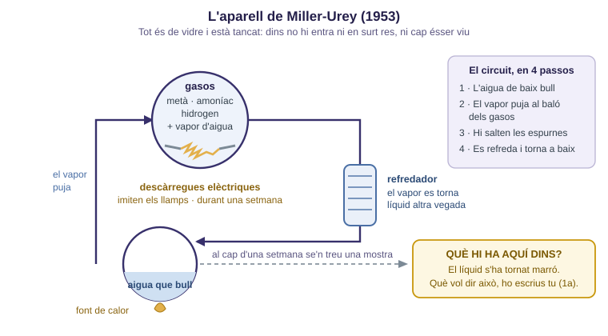
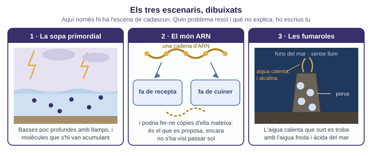
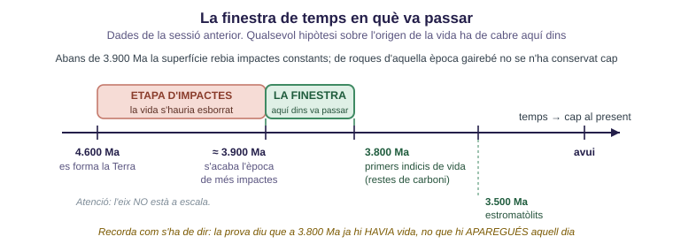
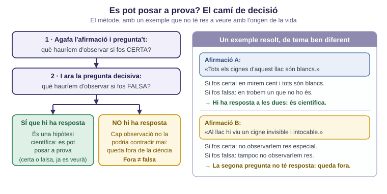

✕
📚 Paraules noves
Metà i amoníac: dos gasos. El detall important és que en una atmosfera amb aquests gasos les reaccions van d'una manera, i en una atmosfera de diòxid de carboni i nitrogen van d'una altra. · Molècula orgànica: molècula feta amb un esquelet d'àtoms de carboni; són les que formen els éssers vius. · Aminoàcid: cadascuna de les peçes amb què es fabriquen les proteïnes. · ARN: molècula molt semblant a l'ADN, feta d'una sola cadena (ja la vas veure a la SA3). · Ribozim: nom que rep una molècula d'ARN amb una propietat sorprenent que descobriràs a l'apartat 3. · Fumarola hidrotermal: xemeneia del fons del mar per on surt aigua escalfada per dins de la Terra. · Alcalí: el contrari d'àcid. · Panspèrmia: proposta que diu que les molècules de la vida (o la vida mateixa) van arribar de l'espai. · Hipòtesi: explicació possible que encara no està demostrada, però que es pot posar a prova. · Astrobiologia: ciència que estudia la possibilitat de vida en altres llocs de l'univers. · Ma: abreviatura de milions d'anys. · Estromatòlit: roca feta per capes de microorganismes (ho vas veure la sessió passada).
Damunt d'una taula hi ha totes les peces d'una bicicleta, escampades. No tens una bicicleta. Doncs bé: què li falta a un montó de molècules escampades per poder dir que allò ja és un ésser viu? Escriu tot el que se t'acudeixi.
✕
🪑 Bastida
Segueix el recorregut del líquid a la Fig.1 amb el dit: on s'escalfa, per on puja el vapor, on rep les descàrregues i on es refreda. Dins de l'aparell no hi havia cap ésser viu ni cap molècula d'ésser viu: només aigua i gasos. Recorda l'exemple de la bicicleta quan hagis d'escriure què NO es va obtenir.

Fig.1 · L'aparell tancat de 1953.
Dada que et dono: al cap d'una setmana, al líquid marró hi havia aminoàcids, que són les peçes amb què es fabriquen les proteïnes de tots els éssers vius.
1a. Completa la fitxa de l'experiment.
| Pregunta | La teva resposta |
|---|
| Què es va posar dins l'aparell? | |
| Quina energia hi va actuar, i què imitava? | |
| Per què aquest resultat va sorprendre tanta gent? | |
| Què NO s'hi va obtenir, tot i que els diaris ho van dir? | |
1b. Explica amb les teves paraules quina diferència hi ha entre aquestes dues frases: «s'han format les peçes dels éssers vius» i «s'ha format un ésser viu».
✕
🪑 Bastida per a 1c
Avui es pensa que l'atmosfera primitiva no era com la que Miller va posar a l'aparell: tenia sobretot diòxid de carboni i nitrogen. Davant d'una objecció així només hi ha tres sortides possibles: llençar la hipòtesi, ignorar l'objecció o modificar la hipòtesi (per exemple: potser aquestes reaccions passaven només en llocs concrets, com prop dels volcans). Pensa quina de les tres deixa la hipòtesi encara comprovable.
1c. Tria una de les tres sortides i justifica-la: per què aquesta i no les altres dues?
✕
🪑 Bastida
Cada targeta té un sol destí. Per col·locar-la, dues preguntes en aquest ordre. Primera: de quina proposta parla? Busca la paraula clau — llamps, gasos o atmosfera → sopa primordial; ARN → món ARN; fons del mar o xemeneies → fumaroles; meteorit o arribar de fora → panspèrmia. Segona: hi juga a favor o li fa un forat? → A favor si el que explica dona suport a l'escenari; → forat si el que s'ha observat no encaixa amb el que aquella proposta necessitaria, o si diu que una cosa que faria falta encara no s'ha aconseguit. Una de les nou no parla de cap de les quatre.
✂ Les targetes són al full a part «Dossier de proves · targetes per retallar». Un full serveix per a dos equips. Tisores i barra d'enganxar.
2a. Col·loqueu les nou targetes a la graella. Recordeu: cada targeta té un sol destí.
| Proposta | Prova a favor | El que encara no explica |
|---|
1 · Sopa primordial
basses, gasos i llamps | | |
2 · Món ARN
una molècula que es copia | | |
3 · Fumaroles
xemeneies del fons del mar | | |
4 · Panspèrmia
va arribar de l'espai | | |
✕
🧭 Aquesta targeta no encaixa en cap de les quatre
✕
🗣️ Prepara la resposta oral. El docent triarà
una targeta i l'equip haurà d'explicar per què l'ha posada allà i per què
no va a cap altre lloc. No serveix llegir-la: cal dir la
paraula que us ha fet decidir.
✕
🪑 Bastida
«L'origen de la vida» sembla una pregunta sola i en són tres: (1) el compartiment — qui separa un dins d'un fora, perquè si no tot es dilueix; (2) l'energia que manté les reaccions en marxa; (3) la informació que es copia, sense la qual no hi pot haver ni herència ni evolució. Cap dels escenaris de la Fig.2 no resol els tres problemes alhora: cadascun en resol algun millor que els altres. Pista per al tercer: a les teves cèl·lules, l'ADN no es pot copiar sense proteïnes i les proteïnes no es poden fabricar sense ADN — cadascuna necessita l'altra.

Fig.2 · Només l'escena de cadascun. La valoració la poses tu.
3a. Per a cada escenari, digues quin problema (o quins) resol millor i quin no resol. Si en poses més d'un, justifica'l.
| Escenari | Quin problema resol millor | Quin problema NO resol |
|---|
| Sopa primordial | | |
| Món ARN | | |
| Fumaroles | | |
3b. La panspèrmia no ataca cap dels tres problemes. Per què no? Què fa, en lloc de respondre la pregunta?

Fig.3 · Amb les dades de la sessió passada.
3c. Mira la Fig.3 i calcula quants milions d'anys dura la finestra verda (de 3.900 Ma als primers indicis de vida). Escriu la resta que has fet.
✕
🪑 Bastida
Per ordenar-les no diguis quina t'agrada més, sinó quina està més ben sostinguda per les targetes. Criteri: mira quantes proves d'observació o d'experiment té a favor, i quina mena de forat té — no és el mateix un forat que ja s'està investigant que un forat que ho fa impossible tot. I recorda com acaba un informe seriós: dient quina observació nova li faria canviar d'opinió.
4a. Ordena les quatre propostes de la més ben fonamentada (1) a la que menys (4), i justifica cada lloc amb una prova o un forat concret.
| Lloc | Proposta | Per què li dono aquest lloc |
|---|
| 1 | | |
| 2 | | |
| 3 | | |
| 4 | | |
4b. Quina observació o experiment nou us faria canviar aquest ordre? Digues què s'hauria de trobar i a quina proposta afectaria.

Fig.4 · El mateix camí que has d'aplicar a la cinquena proposta (l'exemple dels cignes no hi té res a veure).
4c. Aplica el camí de la Fig.4 a la targeta que no encaixava en cap proposta.
| Pregunta | La teva resposta |
|---|
| Què hauríem d'observar si fos certa? | |
| Què hauríem d'observar si fos falsa? | |
4d. Ara escriu per què aquesta afirmació queda fora de la ciència, sense dir en cap moment que sigui falsa.
✕
🧭 Naturalesa de la ciència
Cap de les quatre propostes no està demostrada, i això no és cap escàndol: és l'estat normal d'una pregunta oberta. L'astrobiologia treballa exactament així: explora escenaris, hi busca proves i diu clarament fins on arriba.
5a. Escriu la prova que vas portar de casa i digues d'on l'has treta (nom de la pàgina o del llibre, i qui la publica).
| De quina proposta és | La prova | D'on l'he treta |
|---|
| | |
5b. Aquella font, és fiable? Comprova-ho com a la SA1: se sap qui ho ha escrit? hi ha una institució al darrere? per què ho publiquen? es pot verificar en una altra banda?
5c. Anota una idea d'un altre equip que t'hagi fet dubtar del teu ordre.
6a. Un titular diu: «Un experiment demostra que la vida es va crear a partir de gasos i llamps». Reescriu-lo perquè digui exactament el que l'experiment de 1953 va demostrar, ni més ni menys.
6b. Per què el món ARN va cridar tant l'atenció dels científics? Marca la resposta i explica-la en una línia.
| Opció |
|---|
| ☐ | Perquè l'ARN és molt més resistent que l'ADN i dura milions d'anys |
| ☐ | Perquè hi ha ARN capaç de guardar informació i alhora actuar com una eina |
| ☐ | Perquè s'ha trobat ARN dins dels meteorits que cauen a la Terra |
| ☐ | Perquè l'ARN es forma tot sol amb facilitat a l'aigua calenta del fons del mar |
6c. Un equip publica que, en condicions com les d'una fumarola, s'hi podrien formar cadenes curtes d'ARN, i diu exactament quines condicions caldria muntar al laboratori per comprovar-ho. Digues si això es pot tractar com una hipòtesi científica i per què, fent servir les dues preguntes de la Fig.4.
✕
🏠 Feina per a casa
1
Prepara la teva postura per al debat de la propera sessió: hauríem d'invertir diners públics a buscar vida fora de la Terra? Escriu dos arguments a favor i dos en contra — tots quatre, encara que tu només n'estiguis d'acord amb dos.
2
Per a cada argument, digues en què es basa: en dades, en valors o en les dues coses.
3
Repassa tota la SA7 per a la prova final: Big Bang i les seves proves, condicions de la Terra, semivida i les dues menes de datació, i les hipòtesis d'avui.
Adaptat per Albert Pahissa de l'original de Jordi Domènech. Llicència
CC BY-NC-SA 4.0 (Reconeixement–NoComercial–CompartirIgual).